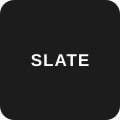
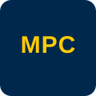
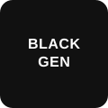
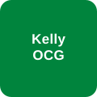
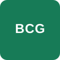
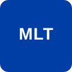

Client consulting engagements, an equity pitch, my summer internship, and the competitive programs I've been selected for. Click any card to expand the full story.
Private equity funds were quietly acquiring Boeing's mechanical and standards-commodity suppliers, then imposing disruptive pricing and breaking long-held contracts — inflating costs across larger parts, electronics, and propulsion. Boeing wanted to see it coming.
As Project Manager, I coordinated the engagement with Boeing's Supply Chain, Procurement, and Risk Management teams. Their data was disorganized, so I first delegated the cleaning and structuring effort, then led the overall solution design — a Private Equity Activity Predictive model combining statistics, financial metrics, company data, and economic research.
The final ensemble (Logistic Regression + Random Forest + Gradient Boosting) reached ~85% test accuracy with a strong ROC-AUC, outputting a buyout-likelihood score and confidence for each supplier. It was handed to Boeing's supply chain team to shape sourcing decisions and contract strategy around at-risk vendors.
Worked as part of a MEG Consulting team on a strategic problem for Blue Cross Blue Shield of Michigan, delivering findings to the client at a formal presentation hosted at Michigan Ross.
[Add your specific role and the core question BCBSM asked. What did your team analyze, and what was your individual contribution?]
[Add the analysis approach — data, frameworks, or research your team used.]
[Add the recommendation your team delivered and how it was received.]

Slate is positioned as an affordable, customizable EV. With the September 2025 removal of the $7,500 federal tax credit reshaping the market, the team explored how Slate should build out its accessory ecosystem to drive revenue beyond the base vehicle while keeping the price low.
Prioritize demographic-driven, utility-focused accessory packages (e.g. an "Adventure Pack"), source domestically to preserve state incentive eligibility and limit tariff exposure, and partner with established accessory manufacturers rather than building in-house. Deliverable: a prioritized ranking of 30–50 SKUs with bundling and a 2–3 year roadmap.

Michigan's existing means of supporting newly released exonerees are limited and slow. Working through MPC with the Organization of Exonerees and Conviction Integrity Units, the team designed the structures — and the funding — to change that.
Helped structure an Exoneree Assistance Loan Program: interest-free advances for housing, transportation, and reintegration, repaid through eventual wrongful-conviction compensation. Built out the memorandum of understanding framework and an advisory-board governance model.
Contributed to a proposal for a Michigan police-accountability database modeled on New York, Maryland, and California — mapping housing (CDAM), data pipelines (Detroit BOPC dashboard), Tableau visualization, ~$100–150K cost, and legislative/opposition analysis with Lansing stakeholders.
Compiled and vetted 40+ potential funders (foundations and federal grants — AWS Imagine, Public Interest Tech Fund, BJA Second Chance Act, and more), mapping deadlines, funding ranges, and required first actions into a prioritized sourcing pipeline.

BlackGen Capital is a competitive, 100% minority-owned national student investment fund (chapters at Cornell, Michigan, Penn, Princeton, Columbia, Yale, NYU, Georgetown, and USC) where members complete a rigorous educational series before pitching stock ideas to the national fund. I was part of the team that pitched Concentra.
Recommended Buy at $19.47 with a $26.58 target (≈36.5% upside). Concentra treats 1 in 5 U.S. work-related injuries, serves 100% of the Fortune 100, and had just pivoted toward contract-based onsite clinics and AI-embedded workflows — a platform shift we argued the market was mispricing.
[Add which parts you owned — e.g. industry overview, company/segment analysis, valuation build, or a specific thesis pillar. The deck covered occupational-health market sizing, competitive moat, the onsite/telehealth platform shift, and a DCF at 7.21% WACC / 2.5% terminal growth.]

KellyOCG is the consulting and outsourcing group within Kelly, advising organizations on talent supply-chain and workforce strategy.
[Add your title, team, and dates once you start. What function are you supporting?]
[Add 1–2 things you'll work on or accomplish — projects, tools, or deliverables.]
PwC Career Preview is a competitive, application-based program that gives a select group of underclassmen an early, hands-on introduction to careers at PwC — including skill-building sessions, networking with professionals, and insight into the consulting practice.
First-Year Foundations is a selective career-development program for a small cohort of first-year students, offering an introduction to the niche field of economic consulting, a hands-on project based on real case types, and direct networking with consultants.

Bridge to Consulting is a competitive, application-based BCG program that builds core consulting skills, connects participants with BCG consultants and recruiters, and offers an inside look at life at one of the top strategy firms.

A selective University of Michigan program developing leadership, professional readiness, and community among a chosen cohort of emerging student leaders.
SEO Career is a rigorous, highly selective program providing training, mentorship, and a direct pipeline to competitive internships at leading firms in finance, consulting, and beyond.
MLT Career Prep is a selective, multi-year fellowship that pairs high-achieving underrepresented students with coaching, a structured curriculum, and access to a network of top employers across business sectors.